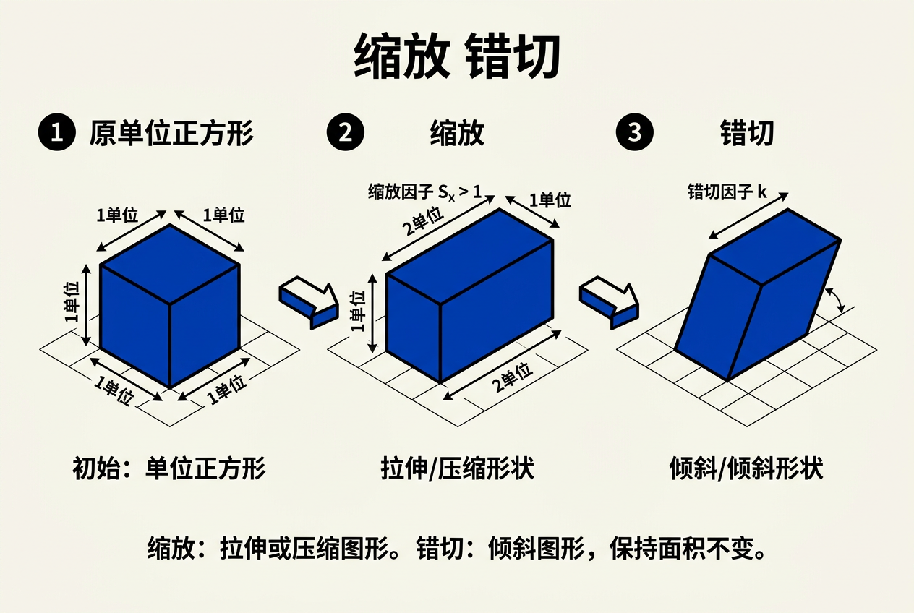
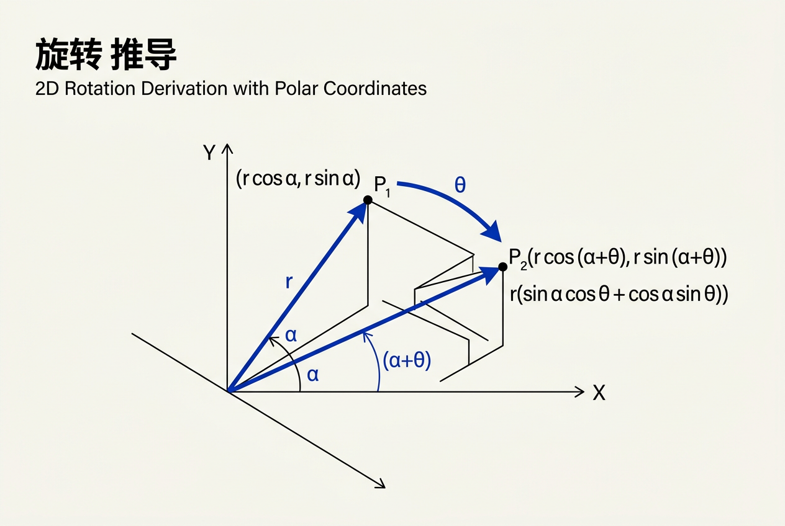
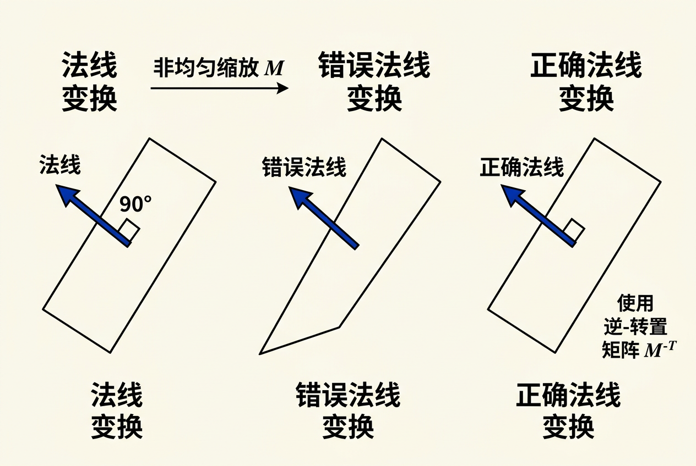
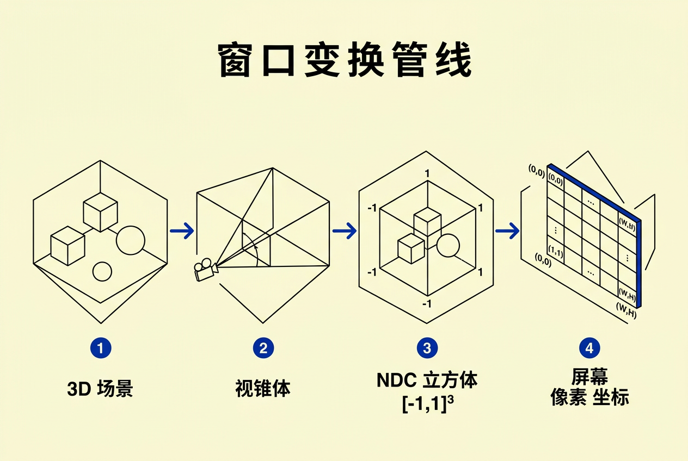

第7章：变换矩阵 — 零基础讲义
讲义说明
本讲义基于 Steve Marschner & Peter Shirley 所著《虎书5》第5版第7章（p.145-166）。
变换矩阵是计算机图形学的"语法"——它是描述物体如何移动、旋转、缩放的统一数学语言。不理解变换矩阵，就无法理解观察、投影、裁剪等后续所有内容。
本版插画采用 Guizang 材质插画风格重新绘制。
学习目标
- 掌握2D和3D的线性变换矩阵
- 理解齐次坐标的作用——为什么需要它
- 掌握旋转矩阵的五步推导过程——核心重点
- 理解法线变换与顶点变换的区别——极易出错
- 掌握从模型到屏幕的完整变换管线
- 学会通过矩阵组合实现任意变换
7.1 什么是变换矩阵？
7.1.1 核心概念
变换矩阵 = 用乘法统一描述几何变换的数学工具
基本思想极其直观：
把变换前的坐标向量 v 乘以变换矩阵 M，得到变换后的坐标 v'。就这样——所有的几何变换（移动、旋转、缩放、扭曲）都可以用矩阵乘法来描述。
| 变换类型 | 矩阵形式 | 例子 |
|---|---|---|
| 缩放 | 对角矩阵 | diag(sx, sy, sz) |
| 旋转 | 正交矩阵 | 绕x/y/z轴旋转θ角 |
| 平移 | 齐次矩阵 | 第四列包含位移量 |
| 剪切 | 非对角元素 | 改变形状但不改变面积 |
7.2 2D线性变换基础
7.2.1 2D缩放
// 缩放变换应用
[x'] [sx 0 ] [x]
[y'] = [0 sy ] [y]
x' = sx · x
y' = sy · y| 符号 | 含义 | 例子 |
|---|---|---|
| sx | x方向缩放因子 | sx=0.5 → 水平缩小一半 |
| sy | y方向缩放因子 | sy=2 → 垂直放大一倍 |
| 均匀缩放 | sx = sy | S(2,2) → 整体放大2倍，保持比例 |
| 非均匀缩放 | sx ≠ sy | S(2,1) → 水平拉长，垂直不变 |
// 数值例子：将矩形缩小一半
S(0.5, 0.5) = [0.5 0]
[0 0.5]
点 (2, 4) → (2×0.5, 4×0.5) = (1, 2) // 坐标减半
7.2.2 2D旋转（标准公式）
// 绕原点逆时针旋转θ角
x' = x·cosθ - y·sinθ
y' = x·sinθ + y·cosθ这个公式看起来简单，但它不是凭空产生的。下一节我们完整推导它。
关键记忆：cosθ在对角线，sinθ在反对角线带符号。第一行是cosθ和-sinθ，第二行是sinθ和cosθ。
7.3 旋转矩阵的五步推导（极坐标法）
这是本章最重要的内容。我们从零开始，逐步推导出旋转矩阵。这不是一个要死记硬背的公式——理解推导过程后，你可以随时"重新发明"它。

第一步：用极坐标表示点
任意向量 (x, y) 可以用极坐标表示：
y
↑
│ / (x, y)
│ /
│ / r = √(x²+y²) ← 向量长度
│ / α = atan2(y, x) ← 与x轴夹角
│ /
│/α
└────────────→ x解释：向量 (x, y) 就像从原点射出的箭，长度 r，与x轴夹角 α。
第二步：写出旋转后的坐标
将向量逆时针旋转 θ 角度后，新向量与x轴的夹角变为 α + θ：
第三步：三角恒等式展开
使用和角公式（三角恒等的核心）：
代入：
x' = r·(cosα·cosθ - sinα·sinθ)
= r·cosα·cosθ - r·sinα·sinθ
y' = r·(sinα·cosθ + cosα·sinθ)
= r·sinα·cosθ + r·cosα·sinθ第四步：代回原始坐标
因为 x = r·cosα, y = r·sinα，所以：
第五步：写成矩阵形式
// 验证矩阵形式
[x'] [cosθ -sinθ] [x]
[y'] = [sinθ cosθ] [y]
x' = x·cosθ + y·(-sinθ) = x·cosθ - y·sinθ ✓
y' = x·sinθ + y·cosθ ✓验证：旋转90°
θ = 90° ⇒ cos90°=0, sin90°=1：
R(90°) = [0 -1]
[1 0]
点 (1, 0) → (0·1 + (-1)·0, 1·1 + 0·0) = (0, 1) ✓ // x轴→y轴
点 (0, 1) → (0·0 + (-1)·1, 1·0 + 0·1) = (-1, 0) ✓ // y轴→-x轴验证通过！(1,0) 逆时针转90° 到 (0,1)，再转到 (-1,0)——完美符合直觉。
顺时针转θ = 逆时针转(-θ)，而 cos(-θ)=cosθ, sin(-θ)=-sinθ。所以 R_cw(θ) = [cosθ sinθ; -sinθ cosθ] = R_ccw(θ)ᵀ。对于旋转矩阵，转置 = 逆矩阵——这就是为什么顺时针旋转是逆时针旋转的逆！
3D旋转矩阵
从2D扩展到3D：每个基本旋转保持一个轴不变，在其他两个轴上做2D旋转。
| 旋转轴 | 矩阵 | 不变量 |
|---|---|---|
| 绕x轴 | [1 0 0; 0 cosθ -sinθ; 0 sinθ cosθ] | x坐标不变 |
| 绕y轴 | [cosθ 0 sinθ; 0 1 0; -sinθ 0 cosθ] | y坐标不变 |
| 绕z轴 | [cosθ -sinθ 0; sinθ cosθ 0; 0 0 1] | z坐标不变 |
规律记忆：保持哪个轴，那行/列就是单位向量。其余4个元素就是2D旋转矩阵。注意绕y轴时sinθ符号是反的（因为右手坐标系中y轴方向特殊）。
7.4 齐次坐标与平移
7.4.1 线性变换的致命局限
2×2矩阵（以及3×3矩阵）只能表示线性变换——旋转、缩放、剪切。它不能表示平移：
没办法用2×2矩阵写出：
x' = x + tx
y' = y + ty
因为这是加法（+tx），不是乘法（×某系数）。
线性变换要求输出是输入的线性组合（只有乘法，没有加法）。平移不是线性变换！它需要加法，而矩阵只能做乘法。解决方法是"升维"——引入齐次坐标。
7.4.2 齐次坐标的定义
齐次坐标的核心思想：给向量增加一个维度 w，把平移"伪装"成矩阵乘法。

| 类型 | 2D表示 | 3D表示 | 原因 |
|---|---|---|---|
| 点 | (x, y, 1) | (x, y, z, 1) | w=1表示这是一个位置，平移时应移动 |
| 向量 | (x, y, 0) | (x, y, z, 0) | w=0表示这是一个方向，平移不影响方向 |
为什么向量w=0？因为平移一个向量不应该改变它：
[1 0 tx] [x] [x + tx·0] [x]
[0 1 ty] [y] = [y + ty·0] = [y] ← 向量不变！
[0 0 1] [0] [ 1 ] [0]注意 w 分量乘以平移量 tx 和 ty 后，因为 w=0，平移贡献被"清零"——向量不受平移影响。
7.4.3 齐次形式的变换矩阵
2D平移矩阵：
3D平移矩阵：
3D缩放矩阵（齐次形式）：
// 数值例子：平移(5, 3) 应用到点 (2, 1)
[1 0 5] [2] [2 + 5] [7]
[0 1 3] [1] = [1 + 3] = [4]
[0 0 1] [1] [ 1 ] [1] ← w=1保持不变7.4.4 仿射变换的性质
所有仿射变换（线性变换+平移）都可以用齐次矩阵表示：
其中A是3×3线性部分，t是3×1平移向量。
| 性质 | 说明 | 是否保持 |
|---|---|---|
| 保直性 | 直线变换后仍是直线 | 是 |
| 保平行性 | 平行线变换后仍是平行线 | 是 |
| 保距离 | 两点之间距离不变 | 否（缩放会改变距离） |
| 保角度 | 向量间夹角不变 | 否（缩放和剪切会改变角度） |
7.5 坐标变换：从局部到世界到相机
7.5.1 从局部到世界（模型变换）
物体在自己的局部坐标系中定义，通过模型矩阵放入世界坐标系：
// 例子：立方体局部坐标中的顶点 (1,1,1)
// 变换到世界坐标（缩放2倍 + 平移到(5,0,0)）
M_model = [2 0 0 5] p_local = [1]
[0 2 0 0] [1]
[0 0 2 0] [1]
[0 0 0 1] [1]
p_world = [2×1 + 5] [7]
[2×1 + 0] = [2]
[2×1 + 0] [2]
[ 1 ] [1]7.5.2 从世界到相机（视图变换）
视图变换将场景从世界坐标转换到以相机为原点的坐标：
// 相机定义
camera_pos = (ex, ey, ez) // 相机在世界的坐标
target = (tx, ty, tz) // 相机注视的位置
up = (ux, uy, uz) // 相机的"头顶"方向
// 构建相机坐标系基向量
w = normalize(camera_pos - target) // -视线方向（z轴）
u = normalize(cross(up, w)) // 右方向（x轴）
v = cross(w, u) // 上方向（y轴）
// 视图矩阵 = 旋转到相机坐标系 + 平移到原点
M_view = [ux uy uz -dot(u, camera_pos)]
[vx vy vz -dot(v, camera_pos)]
[wx wy wz -dot(w, camera_pos)]
[ 0 0 0 1 ]7.6 三维变换矩阵的完整推导
7.6.1 点绕任意轴旋转（Rodrigues公式）
不是所有旋转都绕坐标轴。绕任意单位向量 a 旋转 θ 角的公式称为Rodrigues旋转公式：
这个公式由三部分组成：
- v·cosθ：v在垂直于旋转轴方向的分量，旋转后的"直接投影"
- (a×v)·sinθ：垂直方向旋转产生的分量
- a·(a·v)·(1-cosθ)：v沿旋转轴的分量不变，这里补充了变化的部分
矩阵形式：
// 其中 [a]ₓ 是a的叉积矩阵（反对称矩阵）
[a]ₓ = [ 0 -az ay]
[ az 0 -ax]
[ -ay ax 0]7.6.2 旋转矩阵的性质验证
| 性质 | 公式 | 含义 |
|---|---|---|
| 正交性 | Rᵀ·R = I | 旋转矩阵的逆 = 转置 |
| 行列式 | det(R) = +1 | 旋转是保定向的（不包含镜像） |
| 长度保持 | ||Rv|| = ||v|| | 旋转不改变向量长度 |
| 角度保持 | (Ru)·(Rv) = u·v | 旋转保持向量间夹角不变 |
// 验证2D旋转的正交性
R(θ) = [cosθ -sinθ]
[sinθ cosθ]
Rᵀ·R = [cosθ sinθ] [cosθ -sinθ] = [cos²θ+sin²θ 0 ] = [1 0] = I ✓
[-sinθ cosθ] [sinθ cosθ] [ 0 cos²θ+sin²θ] [0 1]7.6.3 欧拉角与万向锁
欧拉角用三个绕基本轴的旋转组合表示任意旋转：
| 旋转顺序 | 应用场景 | 备注 |
|---|---|---|
| ZYX（偏航-俯仰-翻滚） | 飞行器/相机 | 最常见的约定 |
| XYZ | 一般物体 | 欧拉角顺序不同，结果不同 |
| ZXZ | 机器人 | 避免万向锁问题 |
万向锁（Gimbal Lock）：当第二次旋转为±90°时，第一次和第三次的旋转轴对齐，导致自由度从3丢失到2。这是欧拉角的固有问题，用矩阵组合或四元数可以避免。
欧拉角的三个旋转是"顺序依赖的级联"——先做A再做B再做C。当B=90°时，A和C的旋转轴重合了。矩阵组合直接使用Rodrigues公式表示单一旋转，不存在分解成三个基本旋转的问题——整个旋转就是一个矩阵乘法。
7.7 法线变换——初学者最容易犯的错误

7.7.1 错误示范
// ❌ 错误！这是初学者最常见的错误
incorrect_normal = model_matrix * vertex_normal为什么错了？因为法线是方向，不是位置。更准确地说：法线是垂直于表面的方向，但顶点变换后，表面的朝向可能改变。特别是非均匀缩放时，直接用模型矩阵变换法线会得到错误的结果。
7.7.2 正确推导
假设模型矩阵 M 包含缩放和旋转：
- 表面上两点构成切线 t，变换后 t' = M · t（因为t是方向向量，w=0不受平移影响）
- 法线 n 满足 n · t = 0（法线垂直于表面，即垂直于切线）
- 变换后的法线 n' 应满足 n' · t' = 0
n' · t' = 0
n' · (M·t) = 0 // t' = M·t
假设 n' = X·n（存在某个矩阵X将法线变换到正确方向）：
(X·n) · (M·t) = 0
(X·n)ᵀ · (M·t) = 0 // 点积写成矩阵乘法
nᵀ · Xᵀ · M · t = 0
// 因为 nᵀ · t = 0（变换前法线垂直于切线），所以：
Xᵀ · M = I → X = (M⁻¹)ᵀ// ✅ 正确做法
correct_normal = normalize(transpose(inverse(model_matrix)) * vertex_normal)
// 简化形式（仅当M只有旋转和平移，没有非均匀缩放时）
// 旋转矩阵的逆 = 转置，所以逆转置 = 原始矩阵
correct_normal = model_matrix * vertex_normal // 仅限纯旋转或均匀缩放！7.7.3 经典例子
NVIDIA开发者文档中的经典例子：一个斜面（45°倾角），在x方向拉伸2倍。
原始法线 (归一化前)：n = (1, 1, 0)
模型矩阵 M = S(2, 1, 1) // 非均匀缩放
// ❌ 直接用M变换法线
n'_wrong = M·n = (2, 1, 0) ← 不再垂直于新表面！
// ✅ 用逆转置变换法线
(M⁻¹)ᵀ = [1/2 0; 0 1]
n'_correct = (M⁻¹)ᵀ·n = (0.5, 1, 0) ← 正确垂直于新表面！7.7.4 实践技巧
| 变换类型 | 法线矩阵 | 可否简化 |
|---|---|---|
| 纯旋转 | R | = R（旋转矩阵逆=转置，所以逆转置=R）✓ |
| 旋转+平移 | R（3×3部分） | = R（平移不影响方向）✓ |
| 均匀缩放+旋转 | S·R | = (1/s)·R（归一化后可抵消缩放）✓ |
| 非均匀缩放+旋转 | (M⁻¹)ᵀ | 必须完全计算 ✗ |
// 在CPU上预计算法线矩阵
mat3 normal_matrix = transpose(inverse(mat3(model_matrix)));
// 在GPU着色器中
vec3 world_normal = normalize(normal_matrix * vertex_normal);7.8 窗口变换（完整变换管线）
7.8.1 总览
从3D场景最终显示到屏幕窗口，经历了多步变换。这就是图形学中的"变换管线"：

7.8.2 各步骤详解
第一步：模型变换（局部 → 世界）
将物体的局部坐标变换到世界坐标。通常按"先缩放、再旋转、再平移"的顺序组合。
第二步：视图变换（世界 → 相机）
第三步：投影变换（相机 → 标准化设备坐标NDC）
透视投影（将视锥体映射到 [-1, 1]³ 立方体）：
M_perspective =
[2n/(r-l) 0 (r+l)/(r-l) 0 ]
[ 0 2n/(t-b) (t+b)/(t-b) 0 ]
[ 0 0 -(f+n)/(f-n) -2fn/(f-n)]
[ 0 0 -1 0 ]| 符号 | 含义 | 示例值 |
|---|---|---|
| l, r | 近平面左右边界 | -0.1, 0.1 |
| b, t | 近平面上下边界 | -0.1, 0.1 |
| n | 近裁剪面距离 | 0.1 |
| f | 远裁剪面距离 | 100 |
为什么投影矩阵第4行是 (0, 0, -1, 0)？
因为透视需要"除以z"来完成近大远小。矩阵将z值存入w分量，后续透视除法时：w' = -z，远物（|z|大）→ w'大 → 屏幕坐标小（近大远小效果）。这就是透视投影的"魔法"。
正交投影（不产生透视效果）：
M_orthographic =
[2/(r-l) 0 0 -(r+l)/(r-l)]
[ 0 2/(t-b) 0 -(t+b)/(t-b)]
[ 0 0 2/(n-f) -(n+f)/(n-f)]
[ 0 0 0 1 ]第四步：视口变换（NDC → 屏幕坐标）
将 [-1, 1]³ 的NDC坐标映射到屏幕像素坐标：
M_viewport =
[nx/2 0 0 (nx-1)/2]
[ 0 ny/2 0 (ny-1)/2]
[ 0 0 1/2 1/2 ]
[ 0 0 0 1 ]| 符号 | 含义 | 示例值 |
|---|---|---|
| nx | 屏幕宽度（像素） | 1920 |
| ny | 屏幕高度（像素） | 1080 |
7.8.3 完整变换例子
点 (2, 3, 4) 在局部坐标系，经过各步变换到屏幕：
// 步骤0：局部坐标
p_local = (2, 3, 4, 1)ᵀ
// 步骤1：模型变换（平移(1,0,0) + 缩放(2,2,2)）
M_model = [2 0 0 1; 0 2 0 0; 0 0 2 0; 0 0 0 1]
p_world = (5, 6, 8, 1)ᵀ
// 步骤2：视图变换（相机在(10,0,0)，注视原点）
p_camera = (-5, 6, 8, 1)ᵀ
// 步骤3：透视投影（l=-0.1,r=0.1,b=-0.1,t=0.1,n=0.1,f=100）
p_clip = (... , ..., ..., 5)ᵀ // w=-z ⇒ w=5
// 透视除法：p_ndc = p_clip / w
p_ndc = (.../5, .../5, .../5)ᵀ
// 步骤4：视口变换（1920×1080）
p_screen = (..., ..., ..., 1)ᵀ7.9 矩阵组合与顺序
7.9.1 变换的顺序很重要
应用顺序：从M₁开始（最右边），到M_n结束（最左边）。先做的变换在右边，后做的在左边。
非常重要：矩阵乘法不交换！先旋转再平移 ≠ 先平移再旋转。
// 先旋转再平移：点绕原点旋转后再移动
M = T(5, 0) · R(90°)
= [1 0 5] [0 -1 0] [0 -1 5]
[0 1 0] [1 0 0] = [1 0 0]
[0 0 1] [0 0 1] [0 0 1]
// 先平移再旋转：点平移后在新的位置绕原点旋转
M' = R(90°) · T(5, 0)
= [0 -1 0] [1 0 5] [0 -1 0]
[1 0 0] [0 1 0] = [1 0 5]
[0 0 1] [0 0 1] [0 0 1]
// 两者结果不同！
// 先旋转再平移：点(0,0)→旋转后还在(0,0)→平移后到(5,0)
// 先平移再旋转：点(0,0)→平移后到(5,0)→旋转后到(0,5)7.9.2 标准组合模式
// 模式1：围绕自身中心旋转（自转）
// 1. 移动到原点 2. 旋转 3. 移动回去
M = T(position) · R(θ) · T(-position)
// 模式2：围绕任意点 p 旋转（公转）
M = T(p) · R(θ) · T(-p) // 公式和上面一样！
// 模式3：在指定方向缩放
// 1. 旋转对齐轴 2. 缩放 3. 旋转回去
M = R(-θ) · S(1, sy, 1) · R(θ)旋转矩阵总是绕原点旋转。如果物体不在原点，直接旋转会使物体围绕原点做圆弧运动（公转）而不是自转。先平移到原点→旋转→再平移回去=自转。这是图形学中最常用的变换技巧之一。
7.10 变换矩阵总结
| 矩阵 | 3D齐次形式 | 逆矩阵 |
|---|---|---|
| 平移 | [I t; 0 1] | [I -t; 0 1] |
| 缩放 | [S 0; 0 1] | [1/s 0; 0 1] |
| 旋转 | [R 0; 0 1] | [Rᵀ 0; 0 1]（正交矩阵逆=转置） |
| 透视投影 | 见7.8节 | 复杂 |
核心洞察：变换矩阵是计算机图形学的"语法"——它用数学表达式统一描述了所有几何变换。从物体建模（局部坐标）到最终屏幕显示，每一步都是矩阵乘法。
| 变换阶段 | 从 → 到 | 矩阵 | 作用 |
|---|---|---|---|
| 模型变换 | 局部 → 世界 | M_model | 放置物体到场景中 |
| 视图变换 | 世界 → 相机 | M_view | 从相机视角观察 |
| 投影变换 | 相机 → NDC | M_projection | 透视/正交投影（近大远小） |
| 视口变换 | NDC → 屏幕 | M_viewport | 映射到像素坐标 |
一句话总结：变换 = 矩阵乘法组合，法线变换要用逆转置（非均匀缩放时必须），旋转矩阵来自极坐标→三角恒等式的推导，窗口变换从局部到屏幕经历四次矩阵乘法。